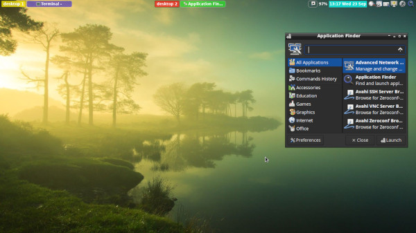

From LXDE To Openbox Then Back To LXDE/Openbox
Author: Red Starfish
Date: 29th September, 2020
First Interactions with LXDE
My first experience with LXDE (By default LXDE uses Openbox but you don't get the right click menu, autostart or enviroment that defines openbox) came with Trisquel Mini. I wanted to use Trisquel(8) and it came with two editions MATE and LXDE. I saw no point in installing Trisquel using a larger ISO when I was going to customize it, use my own choice of applications and not going to use the default ones provided as default by Trisquel. Also I knew that what desktop enviroment comes pre-installed doesn't matter because I can always install the one I want, later.
So, I went with LXDE edition, thinking that I'd install XFCE later after installation. But when using XFCE, I kept coming back to LXDE (with Trisquel theme) mainly because it was lightweight and felt snappier. I also changed some keybindings to suit my needs. But few things I liked (and still like) from XFCE were:
- xfce4-appfinder
- xfce4-notifyd
- xfce4-pulseaudio-plugin - Really useful
- xfce4-screenshooter
After few months as Trisquel 8 was getting really old, I decided to move to Parabola GNU/Linux-libre (Note: If you want to use Trisquel, you should install Trisquel 9). Here my first instinct again was to install LXDE, but after installation I didn't like it. So I immediately installed xfce4 again. I was really surprised how much progress it had gone through in the last 3-4 years. But I became increasingly frustrated as my preferred keybindings (which I created while using Trisquel) were not there, so I started using LXDE again with above mentioned xfce4 programs.
From LXDE To Openbox
While above mentioned things were happening, I tried using the vanilla Openbox few times, but as it's so minimalist and I didn't know what additional softwares to use, I exited Openbox within 5 minutes everytime logged into a openbox-session.
Then I found this really great Fedora Magazine article. This helped me a lot to move towards using Openbox. Openbox session became usable to me.
One thing I noticed, standalone LXDE programs were making openbox more complete but few things weren't working out for me in Openbox, for example:
- Screen wasn't locking immediately after I closed the Laptop lid.
- No Trash support.
- External drive wasn't mounting automatically, I needed to use CLI and become root to work with external drive. Even root couldn't change the permissions or ownership of the files in the external drives.
Using LXDE/Openbox
I decided to go back to LXDE (lxsession) but with a twist.
To use my preferred panel and get back the Openbox's right
click menu, I found that these things are being controlled
by LXDE's autostart file. This file is located at
/home/user/.config/lxsession/LXDE/autostart
. Once I got to this file, stripping things were
very easy. LXDE's right click and wallpaper is controlled by
pcmanfm in desktop mode. I changed it to daemon mode. That
way I got back Openbox's right click menu.
I removed the lxpanel and replaced with tint2. This way, I could use tint2 in LXDE instead having to lxpanel.
Conclusion
So, this is the long tale of how I've found the desktop the way I want. Which is the full functionality of Openbox complemented by LXDE programs.
Helping You
If you want to have your desktop just like I have. Do the following:
-
Clone my Dotfiles repository. Here you'll find all
the necessary configuration files.
$ git clone https://codeberg.org/Red_Starfish/My_Dotfiles.git -
In the openbox directory, you'll find the following files:
- lxde-rc.xml - Put it in
~/.config/openbox/lxde-rc.xml - menu.xml - Put it in
~/.config/openbox/menu.xml - autostart - Put it in
~/.config/lxsession/LXDE/autostart - tint2rc - Put it
in
~/.config/tint2/tint2rc
(make sure you have tint2 installed though.)
- lxde-rc.xml - Put it in
- You will find some awesome wallpapers from here:
$ git clone https://gitlab.com/dwt1/wallpapers.git
You'll need something like nitrogen to set wallpapers. - Next time you login, login to LXDE session.